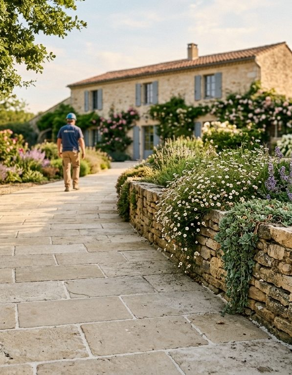
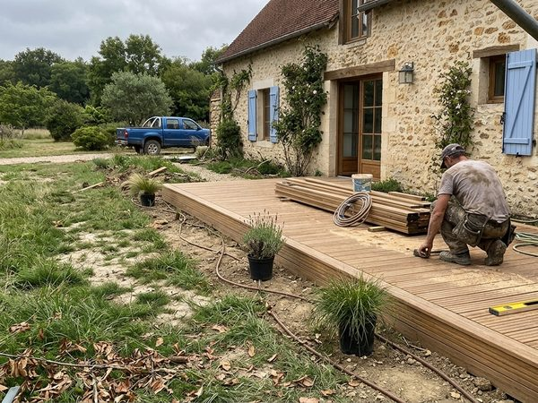
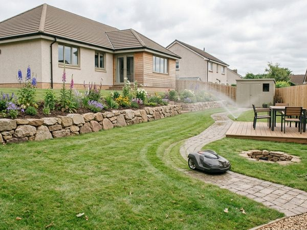
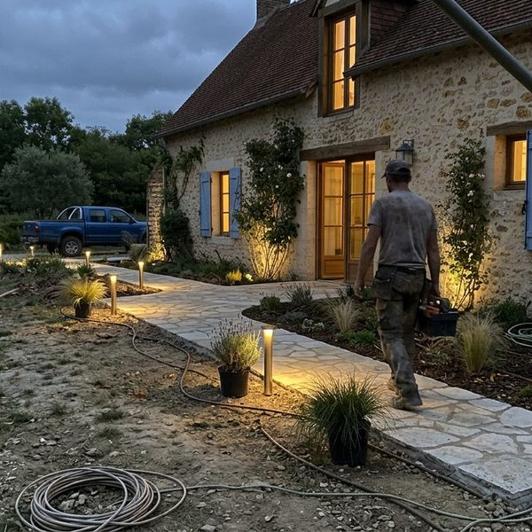

Création de jardins
- Plantations et massifs
- Engazonnement
- Haies et arbustes
- Aménagement paysager
Paysagiste à Egly (91)
Eric Roche aménage et entretient jardins et espaces verts à Egly, en Essonne. Demandez votre devis par téléphone ou en ligne.



Nos prestations
Création, terrasses et entretien : trois domaines pour votre extérieur.
À propos
Eric Roche dirige cette entreprise d’aménagement paysager, installée à Egly, en Essonne.
Elle intervient pour l’aménagement et l’entretien de jardins et d’espaces verts.
Découvrir l’entreprise

Contact
Appelez-nous ou décrivez votre projet en ligne pour obtenir un devis.
Paysagiste à Egly (91) : aménagement et entretien de jardins.
© Eric Roche · Egly (91) · Maquette de démonstration